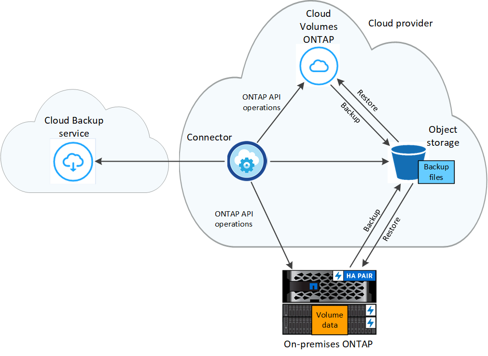

Amazon Web Services
Amazon Web Services
 Google Cloud
Google Cloud
 Microsoft Azure
Microsoft Azure
 Solicitar cambios en el documento
Solicitar cambios en el documento Editar en GitHub
Editar en GitHub Guía del colaborador
Guía del colaboradorMás información acerca de Cloud Backup
Colaboradores
Cloud Backup es un servicio para entornos de trabajo BlueXP (anteriormente Cloud Manager) que proporciona funcionalidades de backup y restauración para la protección y archivado a largo plazo de sus datos. Los backups se generan y almacenan automáticamente en un almacén de objetos en su cuenta de cloud público o privado.
Cuando sea necesario, puede restaurar un volume completo desde una copia de seguridad al mismo entorno de trabajo o diferente. Al realizar una copia de seguridad de los datos de ONTAP, también puede optar por restaurar o uno o varios Files de una copia de seguridad en el mismo entorno de trabajo o en un entorno de trabajo diferente.
El backup y la restauración se pueden utilizar para:
-
Realice backups y restauraciones de datos de volúmenes de ONTAP desde sistemas Cloud Volumes ONTAP y ONTAP en las instalaciones. "Consulte las características detalladas aquí".
-
Realice backups y restaure volúmenes persistentes de Kubernetes. "Consulte las características detalladas aquí".
-
Realice backups de las snapshots consistentes con la aplicación desde sistemas ONTAP en las instalaciones mediante backup en el cloud para aplicaciones. "Consulte las características detalladas aquí".
-
Realice backups de almacenes de datos en el cloud y restaure máquinas virtuales a la instancia de vCenter en las instalaciones mediante Cloud Backup para VMware. "Consulte las características detalladas aquí".

|
Cuando BlueXP Connector se pone en marcha en una región gubernamental de la nube, o en un sitio sin acceso a Internet (un sitio oscuro), Cloud Backup solo admite las operaciones de backup y restauración desde sistemas ONTAP. Cuando se usan estos tipos de métodos de implementación, Cloud Backup no admite las operaciones de backup y restauración de clústeres, aplicaciones o máquinas virtuales de Kubernetes. |
Cómo funciona Cloud Backup
Cuando habilita Cloud Backup en un sistema Cloud Volumes ONTAP o ONTAP en las instalaciones, el servicio realiza un backup completo de los datos. Las snapshots de volúmenes no están incluidas en la imagen de backup. Tras el primer backup, todos los backups adicionales son incrementales, lo que significa que solo se realiza un backup de los bloques modificados y los nuevos bloques. De este modo se minimiza el tráfico de red.
En la mayoría de los casos utilizará la interfaz de usuario de BlueXP para todas las operaciones de copia de seguridad. Sin embargo, a partir de ONTAP 9.9.1, se pueden iniciar operaciones de backup de volúmenes de los clústeres ONTAP en las instalaciones mediante ONTAP System Manager. "Vea cómo usar System Manager para realizar un backup de los volúmenes en el cloud mediante Cloud Backup."
La siguiente imagen muestra la relación entre cada componente:

La ubicación de los backups
Las copias de seguridad se almacenan en un almacén de objetos que BlueXP crea en su cuenta de cloud. Hay un almacén de objetos por clúster/entorno de trabajo y BlueXP denomina al almacén de objetos de la siguiente forma: "netapp-backup-clusterUUID". Asegúrese de no eliminar este almacén de objetos.
-
En AWS, BlueXP habilita la "Función de acceso público en bloque de Amazon S3" En el bloque de S3.
-
En Azure, BlueXP usa un grupo de recursos nuevo o existente con una cuenta de almacenamiento para el contenedor Blob. BlueXP "bloquea el acceso público a los datos blob" de forma predeterminada.
-
En GCP, BlueXP utiliza un proyecto nuevo o existente con una cuenta de almacenamiento para el bloque de almacenamiento de Google Cloud.
-
En StorageGRID, BlueXP utiliza una cuenta de almacenamiento existente para el bloque de almacenamiento de objetos.
Los backups se realizan a medianoche
-
Los backups cada hora comienzan 5 minutos a partir de la hora, cada hora.
-
Los backups diarios comienzan justo después de la medianoche cada día.
-
Los respaldos semanales comienzan justo después de la medianoche los domingos por la mañana.
-
Los backups mensuales comienzan justo después de la medianoche del primer día de cada mes.
-
Los backups anuales comienzan justo después de la medianoche del primer día del año.
La hora de inicio se basa en la zona horaria establecida en cada sistema ONTAP de origen. No se pueden programar operaciones de copia de seguridad a una hora especificada por el usuario desde la interfaz de usuario. Para obtener más información, comuníquese con el ingeniero de sistemas.
Las copias de backup están asociadas con su cuenta de NetApp
Las copias de backup se asocian con "Cuenta de NetApp" En el que reside el conector.
Si tiene varios conectores en la misma cuenta de NetApp, cada conector mostrará la misma lista de backups. Que incluye las copias de seguridad asociadas con Cloud Volumes ONTAP y las instancias de ONTAP en las instalaciones de otros conectores.